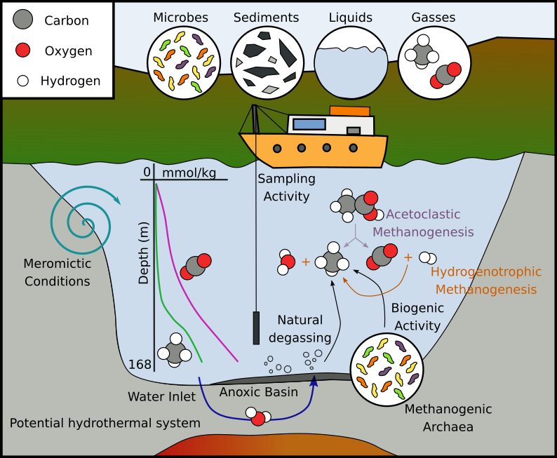

METHAB combines field studies, laboratory simulations and spectroscopy to understand how microorganisms produce and consume methane in extreme environments, and what this means for the search for life beyond Earth.
How do microbial communities control methane production and consumption in extreme terrestrial environments?
Sampling of waters, gases and sediments at three methane-rich sites (Lago Grande at Astroni, Lake Averno, Bolle della Malvizza) and one trace-methane site (Solforata di Pomezia). See the field sites →
Water and gas chemistry, carbon isotopes of methane and CO₂, sediment mineralogy, and 16S rRNA and metagenomic sequencing to link microbes to methane cycling.

Can methane-cycling microbes survive and stay active under conditions like those on Mars or Titan?
A planetary simulation chamber reproduces pressure, temperature, atmosphere and UV radiation of Mars and Titan, using Martian soil simulants such as MGS-1 and the Jezero Delta Simulant (JEZ-1).
Short- and long-term experiments with samples from our field sites, tracking changes in microbial communities and methane-related genes through metagenomics.
Which signals could reveal biological methane on another planet?
Infrared spectroscopy (FTIR), electron microscopy (SEM-EDX) and X-ray diffraction to identify organic and mineral markers, also after exposure to space-like UV and extreme temperatures.
Refining methods to detect and measure methane remotely, building on observatories such as ALMA and the James Webb Space Telescope.
Bringing methane science to space missions and to the public.
Connecting our results with methane data from missions such as Mars Sample Return, Europa Clipper and Dragonfly, including the potential use of methane as a resource.
This website, social media, collaboration with space agencies and media, and a short documentary filmed during the field campaigns.
Keeping the three research units working as one team: progress monitoring, risk management and project meetings. The project kicked off on 3 June 2026; a mid-term and a final meeting will follow, plus dedicated meetings for the field campaigns.
Kick-off meeting, 3 June 2026 Mid-term and final meetings